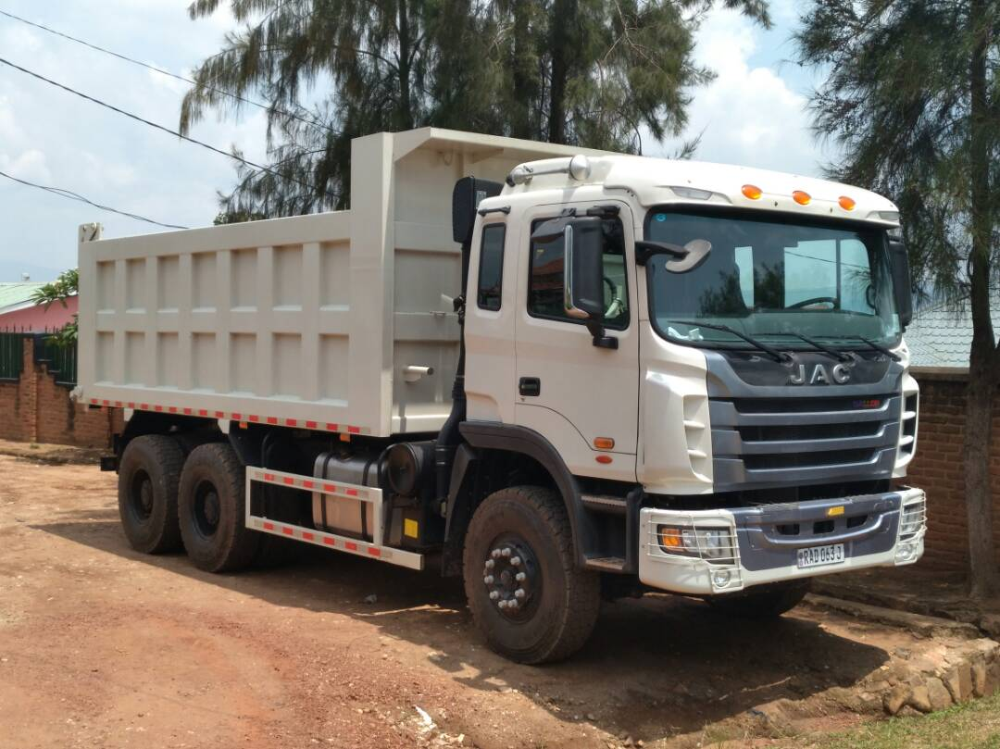

Transportation

Temaco Builders offers delivery services to its customers after purchasing its products. Additionally, Temaco Builders also has the ability of supplying laterite, aggregate, and sand in case a customer needs them. Last but not least, all the costs related to transportation are negotiated on their own with the company.